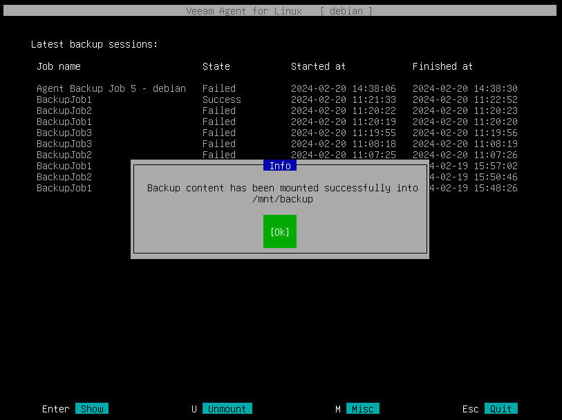
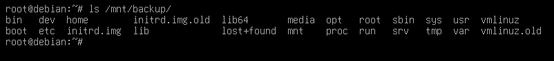

Linux
Sur linux, utiliser la commande suivante:
veeam

On appuie sur la touche “R” pour sélectionner une backup à récupérer
On choisit la backup que l'on souhaite récupérer

La backup est monté dans /tmp/backup

On peut alors récupérer nos fichiers
